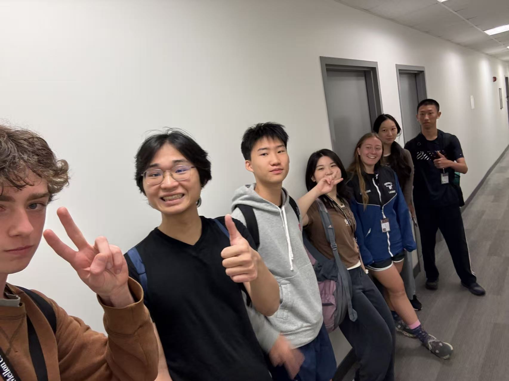
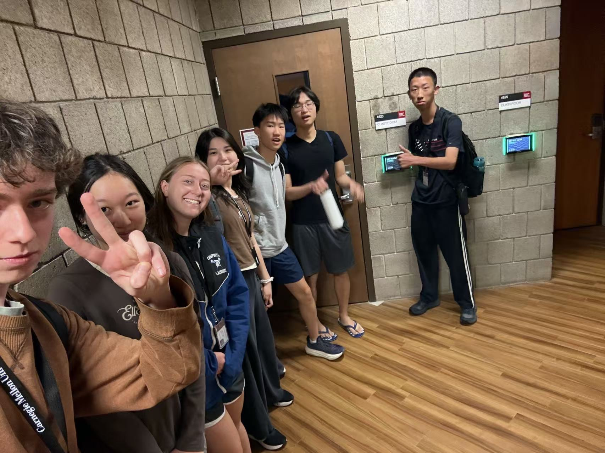
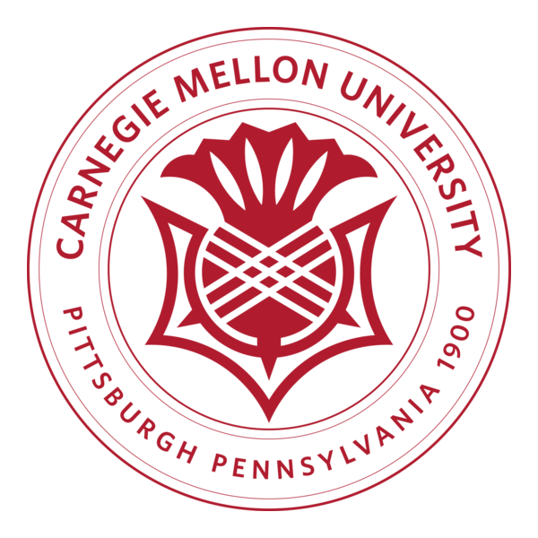
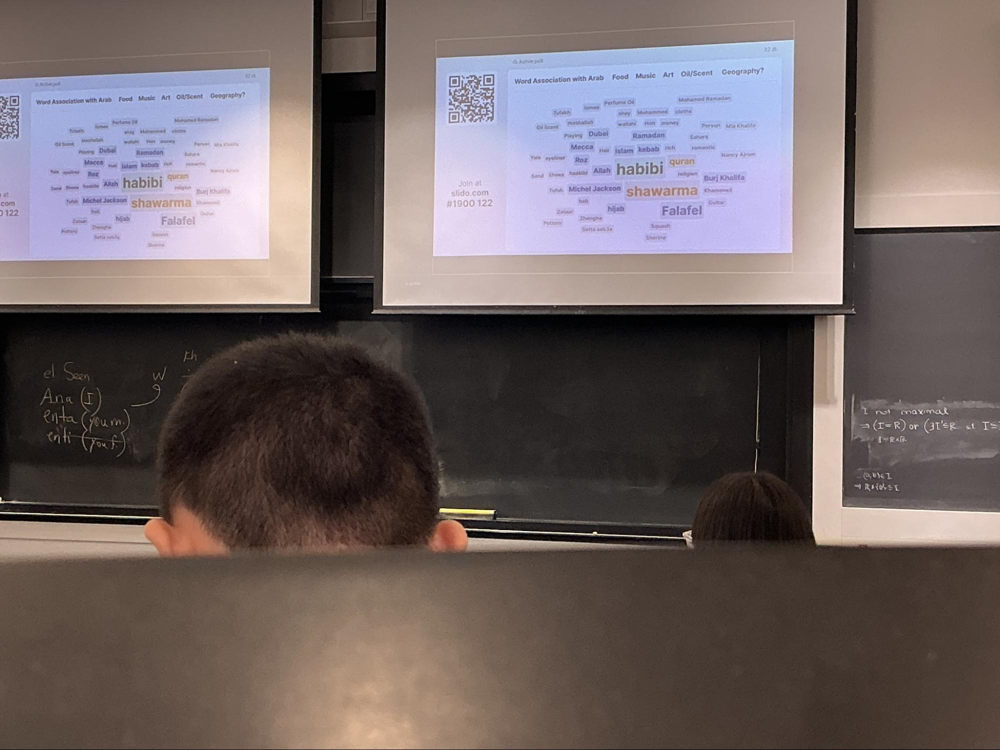
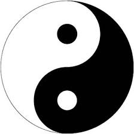

June 21, 2026
Exploration of CMU Campus



When I first ran a cross-country course in eighth grade, a simple question sparked my interest in learning across global cultures and technology: how could engineers prevent the kinds of injuries that take runners out of competition around the world? That question shaped my science fair project, a prototype wearable exoskeleton with rotational sensors, adjustable supports, and AI-assisted design refinements. But as I worked on it, I realized that mechanical innovation alone was not enough. Running cultures differ widely. Kenyan endurance traditions emphasize communal training and natural terrain, Japanese runners rely on precise form drills rooted in discipline, and American athletes often prioritize data-driven gear. A technology that ignores these differences risks becoming a one-size-fits-all product that reinforces inequality instead of reducing it. That realization pulled me toward interdisciplinary research that blends technical innovation with cultural literacy.
As an international boarding student at Tabor Academy, I have been immersed in a community where diverse perspectives are part of everyday learning. I had to adapt to new academic and cultural expectations, become more resourceful, and learn to collaborate with people whose experiences differ from mine. These habits shaped how I approach STEM. In VEX Robotics and Engineering Club, I helped build autonomous robots and underwater ROVs, which taught me to integrate mechanical design with coding, systems thinking, and project management. On my iGEM team, I worked on editing E. coli to mitigate nitrogen pollution, an experience that mixed synthetic biology with ethical and environmental questions. These projects showed me how engineering decisions always carry social and cultural implications, whether in ecology, athletics, or accessibility.
The structure of GCET excites me because it intentionally connects global cultures with emerging technology. Courses on ethics and culture, paired with hands-on workshops in AI, robotics, animation, game design, or XR, will help me evolve my exoskeleton project far beyond biomechanics. I can imagine using AI for real-time form feedback that adapts to local language and cultural norms, or using game design tools to simulate running environments from different countries to teach injury-prevention techniques. Learning from faculty who specialize in human-centered technology will help me design tools that are not only functional but also ethical and inclusive.
In the future, I hope to pursue mechanical engineering or robotics with minors in cultural studies or human-computer interaction, possibly at CMU. Long term, I want to design wearable health systems for athletes around the world and work with organizations or startups committed to equity in sports technology and AI.
GCET’s interdisciplinary approach will shift my mindset from simply engineering solutions to empowering people through culturally informed design. I want to create technology that enhances human potential without erasing human differences, and GCET represents the next step toward that global, people-centered impact.
A running log of what I've been learning day to day at CMU GCET Summer School 2026.
June 21, 2026


June 22, 2026

June 23, 2026
June 24, 2026
June 25, 2026

June 29, 2026
Reference: ovationvr.com
Notes: lunon; personal
The site you're looking at right now: a dashboard-style personal portfolio with a collapsible sidebar, light/dark theme toggle, scroll-reveal animations, and a clickable mascot, built from scratch with no frameworks.
A machine learning model that predicts dementia risk from patient data, aimed at supporting earlier diagnosis and intervention.
Reads running data from Strava and Coros to analyze performance trends and automatically generates personalized workouts based on the results.
A lightweight task manager built with vanilla JavaScript. Add, complete, and delete tasks, with everything saved to local storage so your list persists between visits.
Feel free to reach out — I'd love to hear from you.